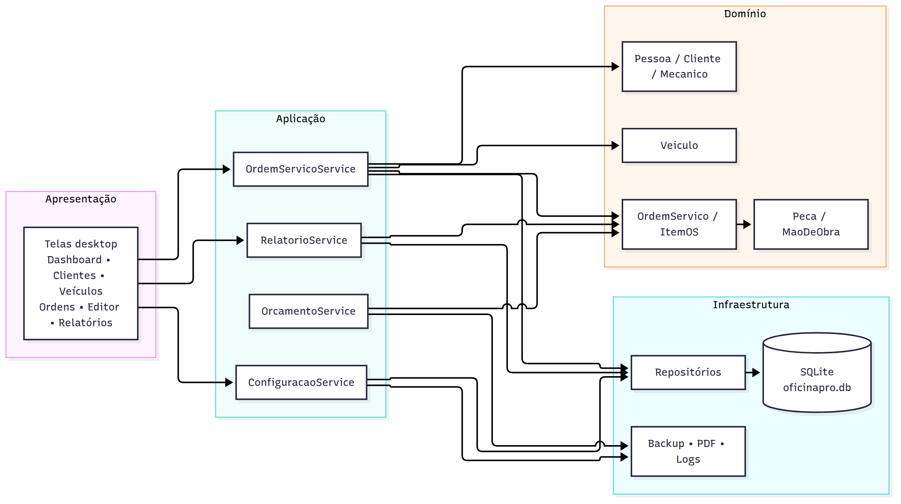
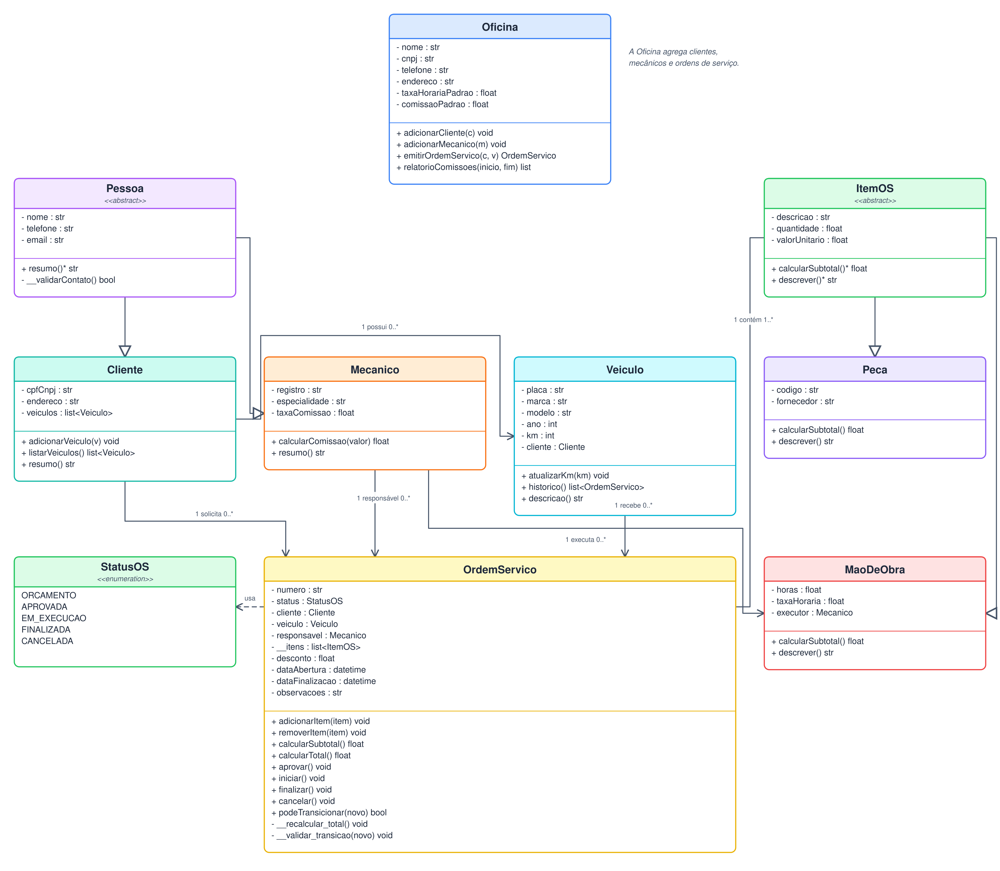
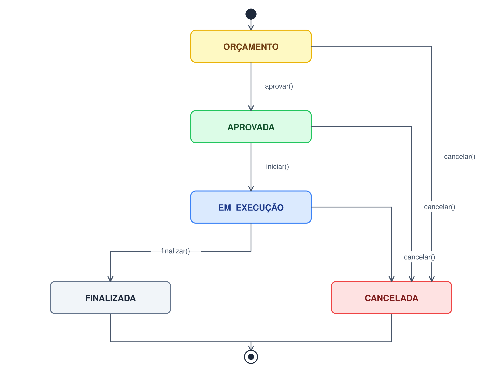
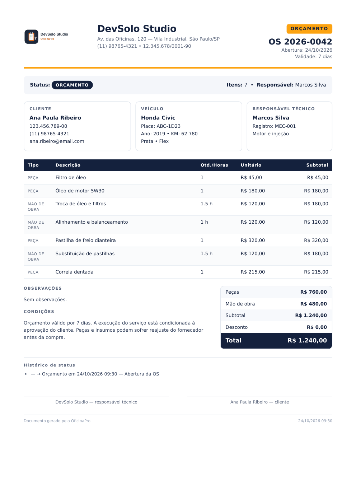
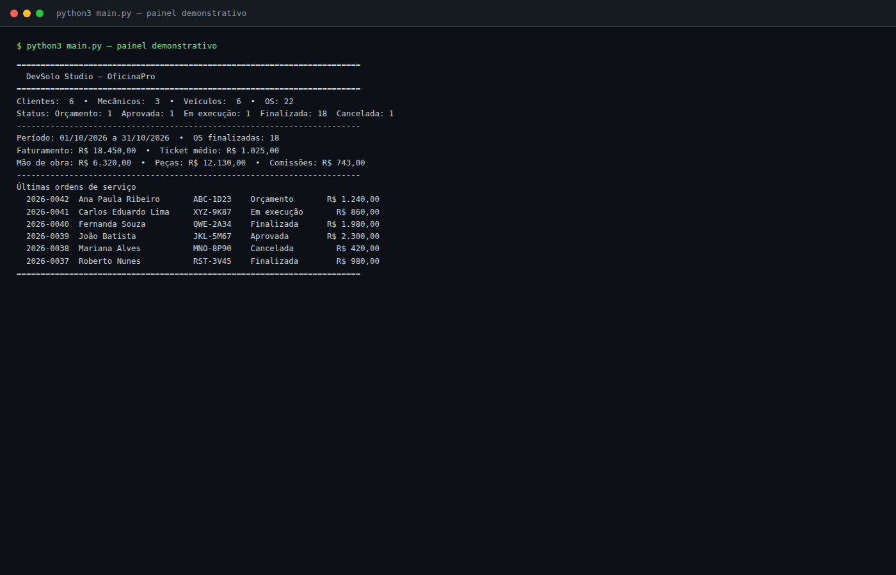
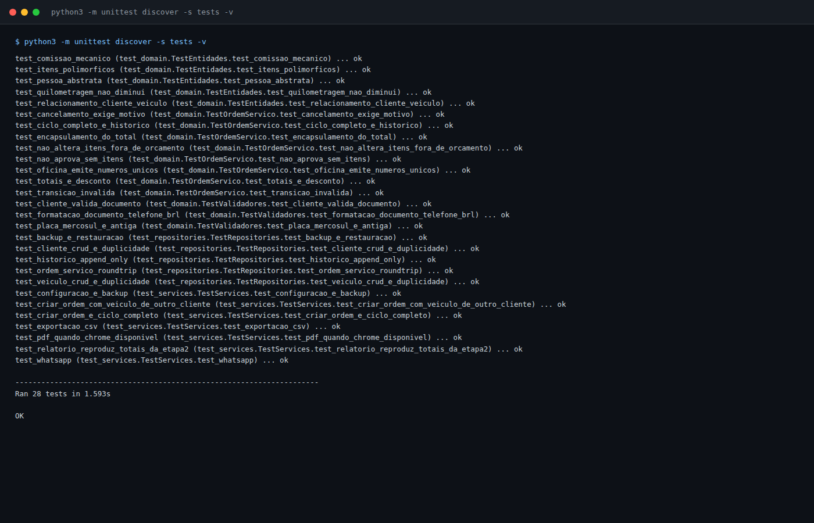

Domínio orientado a objetos, persistência SQLite, serviços de aplicação, relatórios gerenciais, orçamento em PDF e integração com WhatsApp — com 28 testes automatizados.
A Etapa 1 definiu o problema e o escopo do OficinaPro. A Etapa 2 consolidou o contrato de modelagem e interface: classes, regras de negócio, diagrama de estados, arquitetura de persistência, design system, wireframes e protótipo navegável. A Etapa 3 transforma esse contrato em software executável.
O núcleo implementado cobre o fluxo completo de uma oficina de bairro:
O objetivo é entregar um núcleo executável, testável e documentado, preservando as decisões da Etapa 2 e preparando a integração com a interface CustomTkinter da Etapa Final.
| Objetivo | Resultado |
|---|---|
| Implementar o domínio | 13 arquivos em domain/, com classes abstratas, entidades, enumeração e validadores |
| Implementar persistência | SQLite com 9 tabelas, chaves estrangeiras, índices e migração versionada |
| Implementar casos de uso | Serviços de OS, orçamento, relatórios, configuração e WhatsApp |
| Implementar relatórios | Faturamento, mão de obra, peças, ticket médio e comissões por mecânico |
| Implementar PDF | Orçamento em A4 com identidade visual do projeto |
| Implementar testes | 28 testes automatizados com unittest |
| Preservar a Etapa 2 | Nenhum arquivo da Etapa 2 foi alterado; a Etapa 3 tem documentação própria |
Pessoa, Cliente, Mecanico, Veiculo, ItemOS, Peca, MaoDeObra, OrdemServico, Oficina, StatusOS, StatusHistorico.Database, migrations.py, repositórios de cliente, mecânico, veículo, OS, oficina e configuração, além de seed.py e backup.py.OrdemServicoService, OrcamentoService, RelatorioService, ConfiguracaoService e whatsapp.py.main.py com painel demonstrativo e comandos de relatório, PDF, WhatsApp e backup.| Item | Conteúdo |
|---|---|
| Projeto | OficinaPro v1.0 |
| Etapa | Etapa 3 — Implementação do Núcleo |
| Equipe | DevSolo Studio |
| Integrante | Juan Carlos Matos |
| Ambiente de desenvolvimento | Python 3.14.4, SQLite 3, Chrome 156 headless, Linux |
| Ambiente previsto para a interface | Python 3.12+, CustomTkinter 5.x |
| Testes | unittest (stdlib), 28 casos |
| Entrega | 05/11/2026 |
| Status | Concluído para submissão |
| Documento | docs/etapa3/Etapa3_Implementacao.md |
docs/etapa3/Etapa3_Implementacao.pdf |
Observação sobre o ambiente: a máquina usada no desenvolvimento não possui
pip,tkinter,customtkinter,reportlabnempytest. Por isso o núcleo usa apenas a biblioteca padrão, os testes usamunitteste o PDF é gerado com Chrome headless. A interface CustomTkinter será implementada e validada na Etapa Final, em ambiente com as dependências instaladas.
A implementação mantém a separação definida na Etapa 2:

A dependência aponta sempre para dentro: a infraestrutura conhece o domínio, mas o domínio não conhece a infraestrutura. Os serviços de aplicação recebem repositórios por injeção de dependência, o que facilita testes com banco em memória e permite substituir o gerador de PDF.
oficinapro/
├── main.py
├── pyproject.toml
├── requirements.txt
├── requirements-ui.txt
├── domain/
│ ├── exceptions.py
│ ├── validators.py
│ ├── status_os.py
│ ├── status_historico.py
│ ├── pessoa.py
│ ├── cliente.py
│ ├── mecanico.py
│ ├── veiculo.py
│ ├── item_os.py
│ ├── peca.py
│ ├── mao_de_obra.py
│ ├── ordem_servico.py
│ └── oficina.py
├── application/
│ ├── ordem_servico_service.py
│ ├── orcamento_service.py
│ ├── relatorio_service.py
│ ├── configuracao_service.py
│ └── whatsapp.py
├── infrastructure/
│ ├── database.py
│ ├── migrations.py
│ ├── seed.py
│ ├── backup.py
│ ├── repositories/
│ └── pdf/
├── tests/
│ ├── test_domain.py
│ ├── test_repositories.py
│ └── test_services.py
├── assets/
├── docs/
│ ├── etapa2/
│ └── etapa3/
└── orcamentos/
Cliente/Veículo/Mecânico
│
▼
OrdemServicoService.criar_ordem()
│
▼
OrdemServico (ORCAMENTO)
│ adicionar_peca() / adicionar_mao_de_obra()
▼
OrcamentoService.gerar_pdf() ──► PDF
│
├── WhatsApp (wa.me)
▼
aprovar() ──► iniciar() ──► finalizar(km_saida)
│ │
│ ▼
│ Veículo.km atualizado
▼
RelatorioService.resumo() / comissoes_por_mecanico()

| Classe | Responsabilidade principal |
|---|---|
Pessoa (abstrata) |
Nome, telefone, e-mail e validação de contato |
Cliente |
CPF/CNPJ, endereço, data de nascimento, soft delete e coleção de veículos |
Mecanico |
Registro, especialidade, taxa de comissão e cálculo de comissão |
Veiculo |
Placa, marca, modelo, ano, KM e vínculo com cliente |
ItemOS (abstrata) |
Contrato de descrição, quantidade, valor unitário e subtotal |
Peca |
Subtotal por quantidade × valor unitário |
MaoDeObra |
Subtotal por horas × taxa horária e executor |
OrdemServico |
Agregado raiz, itens, desconto, total, status e histórico |
Oficina |
Configuração e emissão de números de OS |
StatusOS |
Enumeração do ciclo de vida |
StatusHistorico |
Registro imutável de transição |
A herança é exercitada em dois eixos, conforme a Etapa 2:
# Pessoa → Cliente / Mecanico
class Pessoa(ABC):
@abstractmethod
def tipo(self) -> str: ...
# ItemOS → Peca / MaoDeObra
class ItemOS(ABC):
@abstractmethod
def calcular_subtotal(self) -> Decimal: ...
class Peca(ItemOS):
def calcular_subtotal(self) -> Decimal:
return (self.quantidade * self.valor_unitario).quantize(Decimal("0.01"))
class MaoDeObra(ItemOS):
def calcular_subtotal(self) -> Decimal:
return (self.horas * self.taxa_horaria).quantize(Decimal("0.01"))
A OrdemServico não precisa conhecer o tipo concreto para calcular o total: ela percorre self.__itens e chama calcular_subtotal(). O mesmo vale para subtotal_pecas e subtotal_mao_obra, que usam item.tipo().
O agregado OrdemServico mantém:
__itens: lista privada de itens;__subtotal: soma dos itens;__total: subtotal menos desconto;_historico: lista de transições;_status: estado atual.Os totais são expostos por propriedades somente leitura. Tentar atribuir ordem.total = ... levanta AttributeError, coberto pelo teste test_encapsulamento_do_total.
Invariantes implementadas:
ORCAMENTO;FINALIZADA e CANCELADA são terminais;data_finalizacao só existe em OS finalizada; data_cancelamento só existe em OS cancelada.A Etapa 2 recomendava Decimal na implementação. A Etapa 3 adota essa recomendação em todos os cálculos financeiros:
_CENTAVOS = Decimal("0.01")
def __recalcular_total(self) -> None:
subtotal = sum((item.calcular_subtotal() for item in self.__itens), Decimal("0.00"))
subtotal = subtotal.quantize(_CENTAVOS)
if self._desconto > subtotal:
raise RegraNegocioError("Desconto não pode ser maior que o subtotal.")
self.__subtotal = subtotal
self.__total = (subtotal - self._desconto).quantize(_CENTAVOS)
O arredondamento usa ROUND_HALF_UP, evitando os erros de ponto flutuante que apareceriam com float.

A tabela de transições fica explícita no código:
_TRANSICOES = {
StatusOS.ORCAMENTO: {StatusOS.APROVADA, StatusOS.CANCELADA},
StatusOS.APROVADA: {StatusOS.EM_EXECUCAO, StatusOS.CANCELADA},
StatusOS.EM_EXECUCAO: {StatusOS.FINALIZADA, StatusOS.CANCELADA},
StatusOS.FINALIZADA: set(),
StatusOS.CANCELADA: set(),
}
Cada transição registra um StatusHistorico com status anterior, novo status, data/hora, usuário e motivo. O método privado __validar_transicao() impede saltos e retrocessos.
O histórico é uma lista de objetos imutáveis (@dataclass(frozen=True)). O repositório não apaga registros: ao salvar uma OS já existente, ele conta quantos registros existem no banco e insere apenas os novos.
existentes = conn.execute(
"SELECT COUNT(*) FROM status_historico WHERE ordem_servico_id = ?",
(ordem.id,),
).fetchone()[0]
for registro in ordem.historico[existentes:]:
conn.execute("INSERT INTO status_historico ...", (...))
O teste test_historico_append_only salva a mesma OS duas vezes após a aprovação e confirma que existem exatamente dois registros.
O banco é criado automaticamente por infrastructure/migrations.py. A versão do schema é registrada em PRAGMA user_version = 1.
| Tabela | Finalidade |
|---|---|
oficina |
Dados e parâmetros da oficina |
cliente |
Cadastro de clientes, com soft delete |
mecanico |
Cadastro de mecânicos e taxa de comissão |
veiculo |
Veículos vinculados a clientes |
ordem_servico |
Cabeçalho da OS, status, datas e desconto |
item_os |
Itens polimórficos (PECA / MAO_DE_OBRA) |
status_historico |
Trilha append-only de transições |
comissao_pagamento |
Reservado para registro de pagamentos de comissão |
configuracao |
Pares chave-valor da aplicação |
Decisões de modelagem:
item_os usa a coluna tipo para distinguir peça e mão de obra, mantendo a leitura simples e o histórico em uma única tabela.TEXT: SQLite não possui DECIMAL nativo; os valores são gravados como texto e convertidos para Decimal no mapeamento.ativo; a exclusão física não é usada.PRAGMA foreign_keys = ON é ativado em toda conexão.Database encapsula a conexão, ativa foreign_keys, busy_timeout e tenta journal_mode = WAL. O método migrate() executa o DDL idempotente e grava a versão. Se o banco tiver uma versão superior à suportada, a aplicação falha com mensagem explícita.
O backup usa VACUUM INTO, que produz uma cópia consistente sem parar a aplicação. A restauração valida PRAGMA integrity_check antes de substituir o arquivo e reabrir a conexão.
| Repositório | Operações principais |
|---|---|
ClienteRepository |
salvar, buscar por id/documento, listar com busca, inativar, reativar, contar |
MecanicoRepository |
salvar, buscar por id/registro, listar, inativar, contar |
VeiculoRepository |
salvar, buscar por id/placa, listar por cliente, atualizar KM, contar |
OrdemServicoRepository |
salvar agregado, buscar por número, listar com filtros, listar finalizadas, contar por status, próximo número |
OficinaRepository |
salvar e obter configuração da oficina |
ConfiguracaoRepository |
obter, definir, listar e remover chaves |
O OrdemServicoRepository é o mais complexo: salva cabeçalho, recria itens e acrescenta histórico. A leitura reconstrói o agregado completo, incluindo cliente, veículo, mecânico, itens e histórico.
A seed infrastructure/seed.py cria 6 clientes, 3 mecânicos, 6 veículos e 22 OS. As 18 OS finalizadas reproduzem exatamente os totais da Etapa 2:
| Indicador | Valor |
|---|---|
| Faturamento | R$ 18.450,00 |
| Mão de obra | R$ 6.320,00 |
| Peças | R$ 12.130,00 |
| Comissões | R$ 743,00 |
| OS finalizadas | 18 |
| Mecânico | OS | Mão de obra | Taxa | Comissão |
|---|---|---|---|---|
| Marcos Silva | 8 | R$ 3.000,00 | 12% | R$ 360,00 |
| Rafael Costa | 6 | R$ 2.300,00 | 10% | R$ 230,00 |
| Diego Almeida | 4 | R$ 1.020,00 | 15% | R$ 153,00 |
As quatro OS recentes usadas nos wireframes também estão presentes:
| OS | Cliente | Veículo | Status | Total |
|---|---|---|---|---|
| 2026-0042 | Ana Paula Ribeiro | Honda Civic ABC-1D23 | Orçamento | R$ 1.240,00 |
| 2026-0041 | Carlos Eduardo Lima | VW Gol XYZ-9K87 | Em execução | R$ 860,00 |
| 2026-0039 | João Batista | Toyota Corolla JKL-5M67 | Aprovada | R$ 2.300,00 |
| 2026-0038 | Mariana Alves | Chevrolet Onix MNO-8P90 | Cancelada | R$ 420,00 |
| 2026-0040 | Fernanda Souza | Fiat Argo QWE-2A34 | Finalizada | R$ 1.980,00 |
| 2026-0037 | Roberto Nunes | Ford Ka RST-3V45 | Finalizada | R$ 980,00 |
O serviço concentra os casos de uso da OS:
criar_ordem(cliente_id, veiculo_id, mecanico_id, ...);adicionar_peca(...) e adicionar_mao_de_obra(...);remover_item(...), aplicar_desconto(...);aprovar(...), iniciar(...), finalizar(km_saida=...), cancelar(...);listar(...) e obter(...);resumo_dashboard().A validação de vínculo cliente/veículo é feita no serviço antes de criar a OS. Ao finalizar, o serviço persiste a quilometragem do veículo e a OS.
O OrcamentoService integra o repositório de OS, a configuração da oficina e o gerador de PDF:
servico = OrcamentoService(ordens, oficinas)
servico.gerar_pdf("2026-0042", "orcamentos/OS-2026-0042.pdf")
servico.link_whatsapp("2026-0042")
O relatório percorre as OS finalizadas do período e calcula:
A comissão é calculada por item de mão de obra, usando o executor do item (MaoDeObra.mecanico) ou, quando ausente, o mecânico responsável pela OS. Isso permite que uma OS tenha mais de um executor sem distorcer a comissão.
O serviço também exporta CSV com separador ; e codificação UTF-8 com BOM, compatível com Excel em português.
O ConfiguracaoService expõe a configuração da oficina, os pares chave-valor e as operações de backup/restauração. O backup padrão é gravado em backups/oficinapro_AAAAMMDD_HHMMSS.db.
O link é gerado no formato https://wa.me/55DDDNUMERO?text=.... A mensagem inclui:
O ambiente da disciplina não possui ReportLab. Para não bloquear a entrega, o gerador monta um HTML com o layout do orçamento e usa o Chrome/Chromium já instalado:
google-chrome --headless=new --no-sandbox --disable-gpu \
--no-pdf-header-footer --print-to-pdf=orcamento.pdf \
file:///tmp/.../orcamento.html
A classe PdfGenerator está isolada em infrastructure/pdf/orcamento_pdf.py. Se o ambiente da Etapa Final tiver ReportLab, basta implementar a mesma interface e injetar o novo gerador no OrcamentoService.

O documento inclui:
python3 main.py --pdf 2026-0042
# PDF gerado: .../orcamentos/OS-2026-0042.pdf
| Comando | Efeito |
|---|---|
python3 main.py |
Cria/abre o banco, carrega a seed se necessário e exibe o painel |
python3 main.py --reset |
Recria a base demonstrativa |
python3 main.py --report |
Relatório de comissões do mês |
python3 main.py --pdf 2026-0042 |
Gera o PDF do orçamento |
python3 main.py --whatsapp 2026-0042 |
Exibe o link do WhatsApp |
python3 main.py --backup |
Gera backup com carimbo de data/hora |
python3 main.py --backup backups/entrega.db |
Gera backup em caminho específico |
python3 main.py --db outro.db |
Usa outro arquivo SQLite |

O painel mostra os mesmos números da Etapa 2 e permite verificar rapidamente que a seed, os cálculos e os relatórios estão coerentes.
Os testes usam unittest da biblioteca padrão, pois o ambiente não possui pytest. A suíte é dividida em três arquivos:
| Arquivo | Foco | Casos |
|---|---|---|
tests/test_domain.py |
Validadores, entidades, itens, totais, transições, encapsulamento e Oficina | 16 |
tests/test_repositories.py |
CRUD, duplicidade, round-trip da OS, histórico append-only e backup/restauração | 5 |
tests/test_services.py |
Criação de OS, ciclo completo, relatórios, CSV, WhatsApp, PDF e configuração | 7 |
| Total | 28 |
Cada teste usa banco temporário ou banco em memória, evitando dependência de estado externo. O teste de PDF é pulado automaticamente quando Chrome/Chromium não está disponível.

python3 -m unittest discover -s tests -v
# Ran 28 tests in 1.593s
# OK
| Requisito da Etapa 2 | Implementação | Evidência de teste |
|---|---|---|
Herança Pessoa → Cliente/Mecanico |
domain/pessoa.py, cliente.py, mecanico.py |
test_pessoa_abstrata, test_comissao_mecanico |
Herança ItemOS → Peca/MaoDeObra |
domain/item_os.py, peca.py, mao_de_obra.py |
test_itens_polimorficos |
| Cálculo de subtotais e total | OrdemServico.__recalcular_total() |
test_totais_e_desconto |
| Desconto não superior ao subtotal | OrdemServico.aplicar_desconto() |
test_totais_e_desconto |
| Transições de status | _TRANSICOES, __validar_transicao() |
test_ciclo_completo_e_historico, test_transicao_invalida |
| Histórico append-only | status_historico + repositório |
test_historico_append_only |
| Veículo pertence ao cliente | OrdemServico.__init__, serviço |
test_criar_ordem_com_veiculo_de_outro_cliente |
| Placa antiga e Mercosul | normalizar_placa() |
test_placa_mercosul_e_antiga |
| CPF/CNPJ único | cliente.cpf_cnpj UNIQUE |
test_cliente_crud_e_duplicidade |
| Soft delete | Cliente.inativar(), ativo |
test_cliente_crud_e_duplicidade |
| Persistência SQLite | Database, migrations.py, repositórios |
test_ordem_servico_roundtrip |
| Backup/restauração | BackupService |
test_backup_e_restauracao |
| Relatório de comissões | RelatorioService |
test_relatorio_reproduz_totais_da_etapa2 |
| PDF do orçamento | PdfGenerator |
test_pdf_quando_chrome_disponivel |
application/whatsapp.py |
test_whatsapp |
PRAGMA integrity_check.| Decisão | Motivo | Trade-off |
|---|---|---|
Decimal para dinheiro |
Evita erros de arredondamento | Mais verboso que float |
| Herança em tabela única para itens | Leitura e histórico simples | Colunas específicas ficam nulas |
| Histórico append-only | Auditoria e rastreabilidade | Mais linhas no banco |
| Soft delete | Preserva histórico de OS | Consultas precisam filtrar ativo |
| PDF via Chrome headless | Funciona sem ReportLab | Depende de Chrome instalado |
Testes com unittest |
Sem pytest no ambiente |
Menos recursos que pytest |
| Seed com 22 OS | Reproduz os totais da Etapa 2 | Mais dados para manter |
| Repositórios com SQL explícito | Transparência e controle | Mais código que um ORM |
customtkinter instalado.A Etapa 3 entrega o núcleo funcional do OficinaPro. O domínio implementa as regras da Etapa 2 com Decimal, herança, polimorfismo, encapsulamento e transições validadas. A persistência SQLite mantém o agregado consistente, com histórico append-only, soft delete e backup. Os serviços de aplicação cobrem o fluxo de OS, orçamento, relatórios e WhatsApp. O PDF reproduz a identidade visual do projeto. Os 28 testes automatizados e a seed com os totais exatos da Etapa 2 fornecem evidência objetiva de que o núcleo está pronto para receber a interface final.
docs/etapa2/Etapa2_Modelagem_e_Interfaces.pdf.docs/etapa2/prototipo/index.html.OficinaPro v1.0 — Etapa 3: Implementação do Núcleo
DevSolo Studio • Juan Carlos Matos • 2026